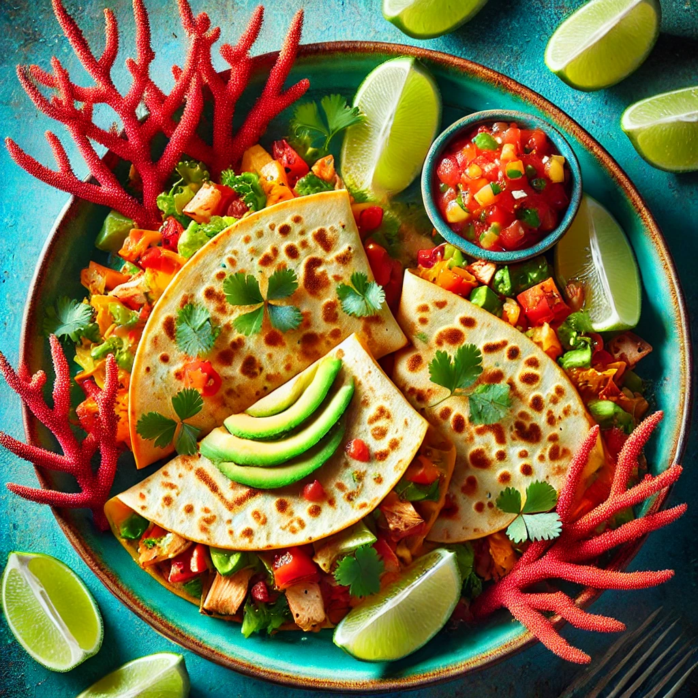

THE BUSTY MERMAID

Coral Reef Quesadillas
Ingredienser og Oppskrift:
Velkommen til Coral Reef Quesadillas – en smakfull og sprø matbit som minner om de tropiske, fargerike korallrevene. Hver bit er en eksplosjon av smak, som å dykke ned i sjøen og finne skjulte skatter! Denne retten er perfekt for de som elsker en god, krydret smaksbombe på en solrik strand.
Så, hva finner du i denne deilige retten? Her er oppskriften på å lage et eventyr i hver bit:
- 2 store **hvetetortillas** (for å sette grunnlaget for eventyret)
- 1 kopp **revet ost** (den perfekte fyllingen som smelter som solskinn på havet)
- 1 kopp **grillet kylling** (for den saftige smaken av tropiske kystlinjer)
- 1/2 kopp **salsa** (frisk og krydret, som havbrisen på en stekende dag)
- 1/4 kopp **avokado** (for den kremete, myke følelsen av en rolig sjø)
- 1/4 kopp **frisk koriander** (den perfekte urten som minner om eventyrlige opplevelser)
Hvordan lage denne retten:
- Varm opp en stekepanne på middels varme.
- Legg den første tortillaen i pannen og fyll med ost, grillet kylling, salsa, avokado og koriander.
- Legg den andre tortillaen på toppen og stek til begge sider er gyldenbrune og osten er smeltet.
- Skjær i små trekanter, og server med en frisk limebit.
- Skål, og nyt smaken av den tropiske sjøen – du er nå en ekte korallhelt!
OBS: Denne retten er kjent for å sette fart på appetitten, og kan få deg til å føle deg som en ekte sjømatkonge eller dronning!